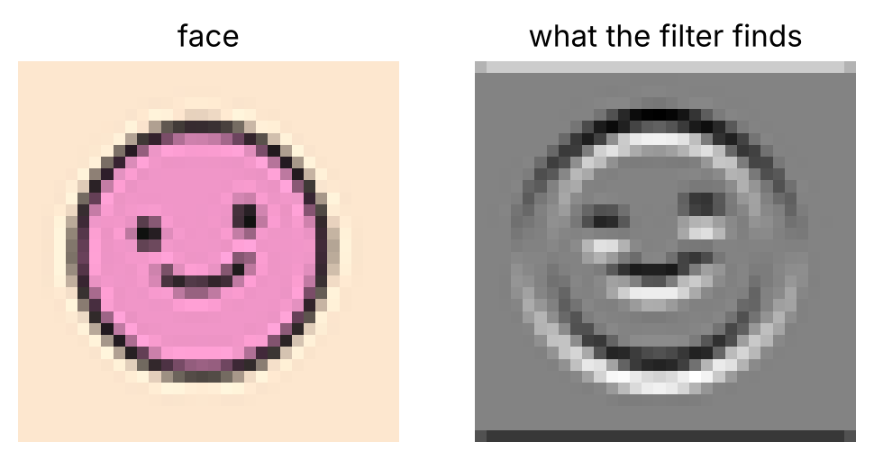
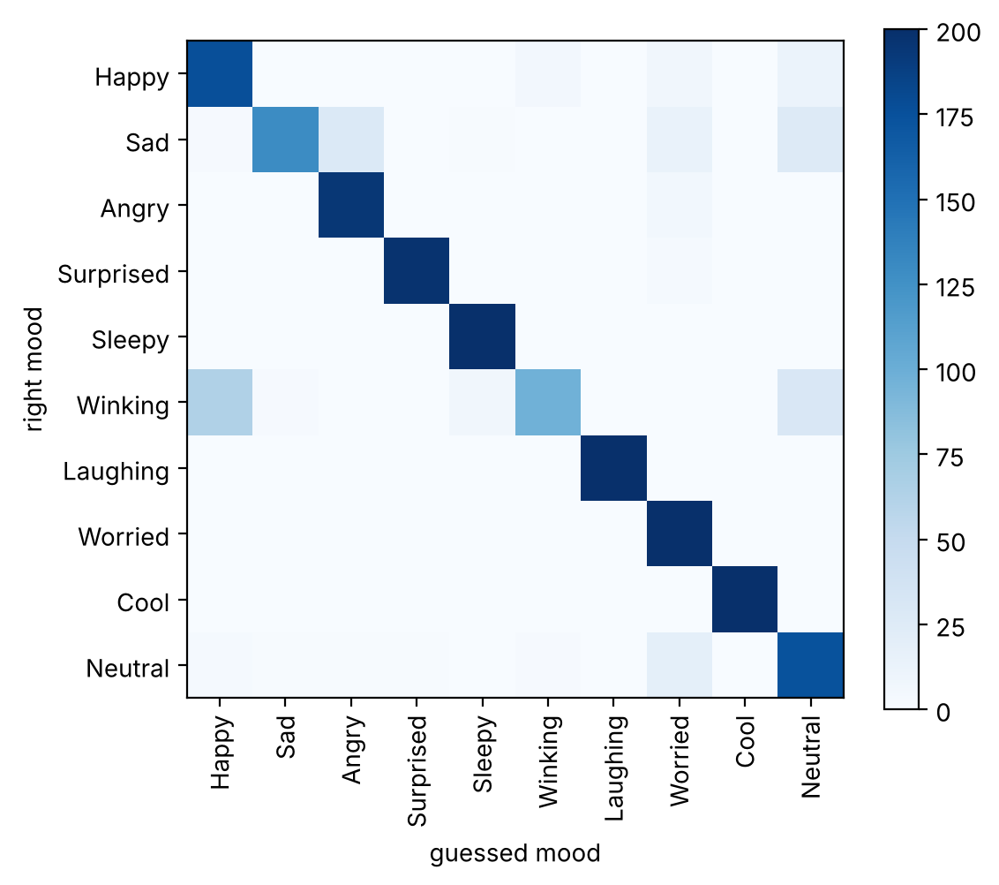

A short introduction. The sections with a notebook each have their own video. Captions are built in.
What the Olympiads Are
The International Olympiad in Artificial Intelligence (IOAI) is the AI version of the maths and informatics olympiads, for school students. It started in Bulgaria in 2024. The 2026 Olympiad, in Astana, Kazakhstan, had about 500 students from more than 100 countries and territories.
Medals come from the individual contest: two days, about six hours each. A task usually gives you a dataset, a starter notebook with a basic solution, and a score to beat. You have to improve the model yourself, in machine learning, computer vision or language tasks. There's also a team challenge, which doesn't count towards medals.
The UK Olympiad in AI (UKOAI) chooses the UK team. In 2026 the route was:
- an online UKOAI test, plus an exam on programming and maths for deep learning
- an interview with a UKOAI mentor, testing problem-solving
- a residential training camp at King's College, Cambridge, for the strongest students
- four students chosen to represent the UK
Dates, eligibility and how to register change each year, so check ukoai.org and ask your teacher.
What You've Already Done
The IOAI publishes a syllabus listing every topic it can set. Here's how the Mood Machine maps onto it.
| IOAI topic | Where you met it |
|---|---|
| PyTorch basics and tensors | Sessions 2 and 3 |
| Linear regression and gradient descent | Sessions 4 and 5 |
| Perceptrons, activation functions (ReLU) | Session 3 |
| Multi-layer perceptrons | Session 7 |
| Loss functions: mean squared error, cross-entropy | Sessions 4 and 8 |
| Back propagation | Sessions 8 and 9 |
| Mini-batch gradient descent, Adam, learning rates | Sessions 5, 6 and 8 |
| Normalisation, splitting data | Sessions 6 and 11 |
| Overfitting, hyperparameter tuning, early stopping | Session 11 |
That's the core of the "neural networks" part of the syllabus. Not yet covered: convolutional networks, augmentation, metrics beyond accuracy, classical machine learning, pretrained models and transformers. The first three are in this page's notebook.
A Network That Sees Shapes
In Session 7, Flatten unrolled each face into one long list, and MoodNet was never told which pixels were next to each other. A convolutional neural network (CNN) keeps the picture as a picture.
A convolutional layer slides a small grid of weights, called a filter, across the image. At every position it multiplies and adds, just like a neuron, and writes one number into a new image. The same 9 weights are used at every position, so a filter that finds the edge of a mouth finds it anywhere in the picture.

In a CNN the filters aren't set by hand. They're learned, like any other weights. After each convolutional layer, max pooling keeps the biggest value in each 2 by 2 square, halving the width and height. The network ends with Flatten and Linear layers, as MoodNet did.
In your notebook
Open olympiad-cnn-starter.ipynb and run the first cell straight away. Run sections 1 to 4. In section 2, do the YOUR TURN cell: change the filter so it finds edges from left to right.
MoodNet: 820,874 numbers to learn validation 81.2 % MoodCNN: 136,874 numbers to learn validation 95.8 %
The CNN has a sixth of the numbers to learn, and scores much higher, because it doesn't waste weights relearning the same shape in every position.
Augmentation
Turn the faces upside down, and the CNN fails as badly as MoodNet did in Session 10: 9.7%. It has never seen an upside-down face.
Augmentation changes the training pictures as training goes on, so the model sees more variety without needing new data. In section 5, about half of every batch is turned upside down before the network sees it.
upright upside down MoodCNN 95.8 % 9.7 % MoodCNN + augmentation 88.3 % 91.2 %
Upside-down faces jump from 9.7% to 91.2%. Upright faces drop a little, because the same filters now have to handle both. The YOUR TURN cell lets you win some of that back, for example by training for longer.
Think
Which augmentations would help a model that reads real photos of faces? Which would harm it?
Some answers
Small rotations, flipping left to right, small changes of brightness and cropping all help, because real photos vary in those ways. Turning a real face upside down rarely helps, because real photos are almost never upside down. Flipping left to right would harm a model that has to tell a left wink from a right wink. Good augmentation copies the variety the model will meet, not every possible change.
Beyond Accuracy
Accuracy is one number for all ten moods. A confusion matrix shows every pair of right mood and guessed mood. The diagonal is right answers; anything off the diagonal is a mix-up.

From the matrix you can work out three scores for each mood:
- Precision: of the faces it called Happy, how many were Happy?
- Recall: of the faces that were Happy, how many did it find?
- F1: one score that balances the two: 2 × precision × recall ÷ (precision + recall).
Happy precision 0.72 recall 0.88 F1 0.79 Winking precision 0.93 recall 0.48 F1 0.64
Winking has high precision but low recall: when the network says Winking it's usually right, but it misses half the winking faces, mostly calling them Happy. Olympiad tasks are often scored with F1 or similar, especially when some classes are rarer than others.
In your notebook
Run section 6. Then use the last YOUR TURN cell to improve MoodCNN. Change one thing at a time and compare on the validation faces, as in Session 11.
Next Ideas to Learn
These are on the IOAI syllabus but not in the notebook. Each is worth a few evenings with the resources below.
Classical machine learning. Before neural networks, and still often the right choice for tables of data: k-nearest neighbours (label a new example by its closest training examples), decision trees and random forests (a series of yes/no questions), k-means (find groups without labels: unsupervised learning) and PCA (squash many features into a few). Python's scikit-learn library has all of them, in a few lines each. It isn't installed on the school PCs, so ask your teacher if you'd like it.
Pretrained models and fine-tuning. Big networks such as ResNet have already been trained on millions of photos. Their early layers have learned useful filters for edges, textures and shapes. Fine-tuning means taking one of these networks and training only its last layers on your own data. It's how most real image tasks are solved, and how most olympiad image tasks are approached.
Attention and transformers. The networks behind chatbots and translation. Attention lets every word in a sentence (or every patch of an image) look at every other one and decide which matter most for it. A transformer stacks many attention layers. The IOAI expects you to understand how attention works for text and images.
The maths. The olympiad exams test maths for deep learning. The most useful topics are differentiation and the chain rule (the maths behind back propagation), matrices and matrix multiplication (every layer is one), and logarithms and probability (behind softmax and cross-entropy).
Resources
Every resource here is free.
- IOAI syllabus: the official list of topics
- IOAI educational resources: courses and past national olympiad problems
- IOAI 2025 tasks and solutions: real olympiad problems, with data, to try yourself
- UK Olympiad in AI: dates and how to enter
- PyTorch tutorials: the official guides, including CNNs and fine-tuning
- 3Blue1Brown: Neural networks: visual explanations of back propagation, attention and transformers
- scikit-learn tutorials: classical machine learning
- fast.ai Practical Deep Learning: a free course that starts with real projects